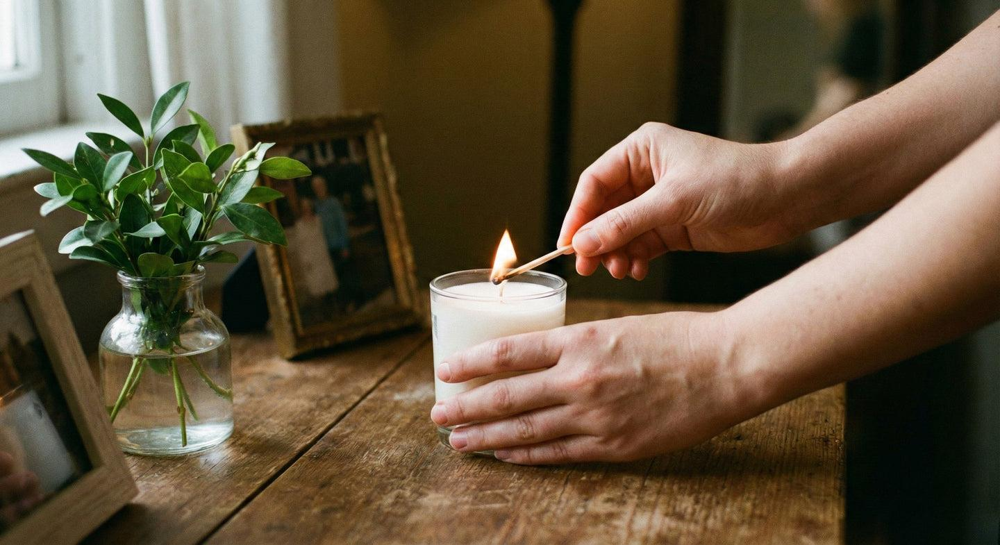
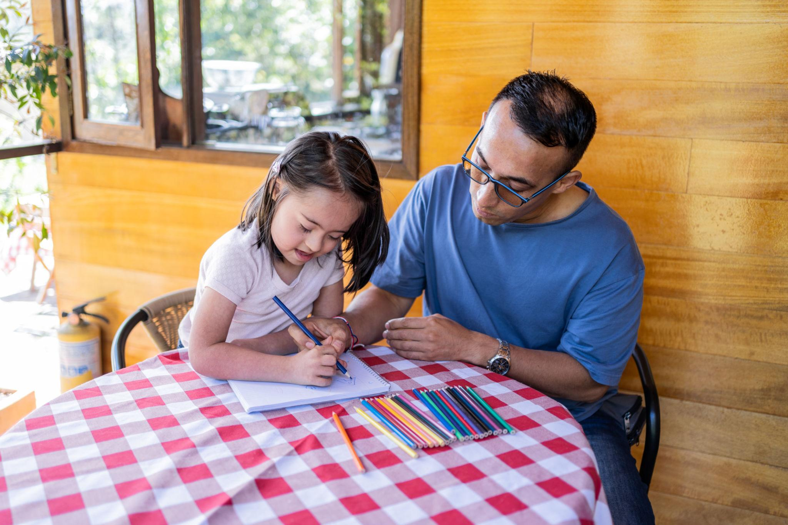
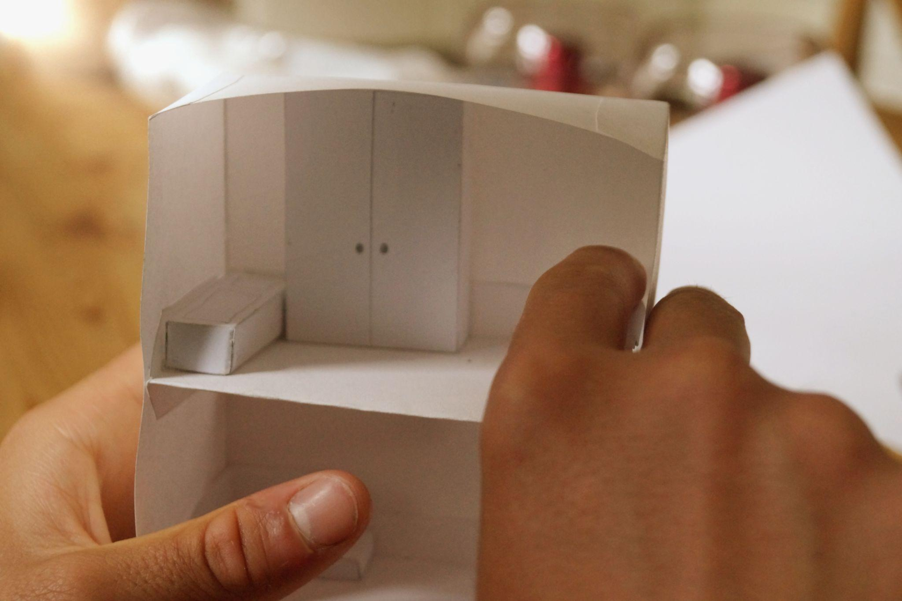

Жизненные ситуации
1Я переживаю расставание

2Я проживаю потерю

3Я потерял(а) себя и не знаю, чего хочу
4У нас появился ребёнок. Всё изменилось
5Мои родители стареют и нуждаются во мне

6Мой ребёнок развивается иначе

7Мне трудно выстраивать границы

8Я потерял(а) работу

9Я переехал(а) и чувствую себя не на своём месте
10Я не знаю, куда двигаться дальше